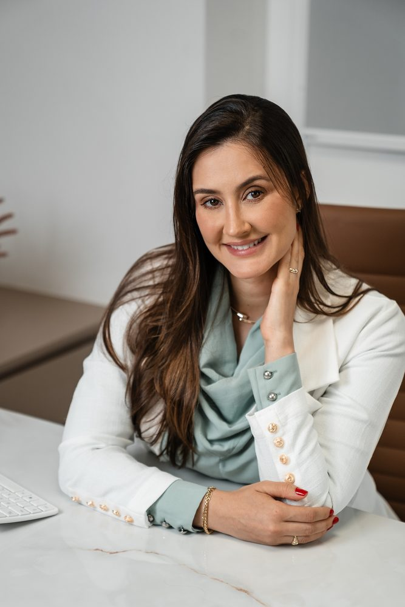

01
Saúde da pele
Avaliação de acne, rosácea, manchas, dermatites, psoríase e outras queixas da pele. A consulta considera histórico, sintomas e rotina para orientar investigação e cuidados.
Conheça a dermatologia clínicaDra. Karoline Rizzatti · Dermatologista em Palhoça
Sou a Dra. Karoline Rizzatti, médica dermatologista na Clínica Rizzatti, em Pedra Branca, Palhoça. Atendo questões da pele e dos cabelos e avalio possibilidades de cuidados estéticos. Cada consulta começa com escuta, exame e orientação individualizada.
Médica dermatologista · CRM/SC 17360 · RQE 13315

Dra. Karoline RizzattiCada pessoa chega com uma história diferente. Na consulta dermatológica, conversamos sobre suas queixas, rotina e expectativas antes de definir os próximos passos do cuidado.
Áreas de cuidado
Você pode trazer uma queixa específica ou dúvidas sobre sua rotina. A consulta ajuda a identificar necessidades e a discutir as opções de cuidado.
Avaliação de acne, rosácea, manchas, dermatites, psoríase e outras queixas da pele. A consulta considera histórico, sintomas e rotina para orientar investigação e cuidados.
Conheça a dermatologia clínica
Queda de cabelo, afinamento dos fios e alterações do couro cabeludo pedem avaliação das possíveis causas. A orientação pode incluir exames e acompanhamento conforme cada caso.
Conheça a tricologia
O primeiro passo é conversar sobre objetivos, expectativas e saúde da pele. Procedimentos e tecnologias são considerados apenas quando fazem sentido após avaliação médica.
Conheça os cuidados estéticosComo funciona a consulta
Você não precisa escolher um procedimento antes de vir. A avaliação dermatológica orienta as opções de cuidado para seu caso.
Envie uma mensagem para a equipe da Clínica Rizzatti pelo WhatsApp e solicite um horário com a Dra. Karoline.
Conversamos sobre queixas, histórico de saúde, tratamentos anteriores e rotina. A pele ou os cabelos são examinados conforme a necessidade.
Ao final, você recebe orientações. Exames, tratamentos e acompanhamento são discutidos quando indicados pela avaliação.

Conheça a médica
Sou médica dermatologista, CRM/SC 17360 e RQE 13315. Acredito em uma medicina que combina conhecimento técnico com uma relação próxima e responsável. Na Clínica Rizzatti, em Pedra Branca, Palhoça, recebo pacientes para avaliação da pele, dos cabelos e de demandas estéticas, sempre começando pela escuta.

Onde atendo
Meu atendimento acontece na Clínica Rizzatti, no Passeio Pedra Branca, em Palhoça, na Grande Florianópolis. Nesse espaço, a equipe recebe sua mensagem, informa a disponibilidade da agenda e ajuda você a organizar a consulta.
Rua Rubens de Arruda Ramos
Passeio Pedra Branca · Palhoça, SC
WhatsApp da clínica: (48) 99173-5899
Atendimento da clínica: segunda a sexta, 8h30 às 12h e 13h15 às 18h30.
Conheça a Clínica RizzattiDúvidas frequentes
Na Clínica Rizzatti, no Passeio Pedra Branca, em Palhoça, Santa Catarina.
Queixas relacionadas à pele ou aos cabelos, dúvidas sobre rotina de cuidados e interesse em procedimentos estéticos podem ser conversados na avaliação.
Não. Você pode explicar sua queixa ou objetivo; a indicação de exames, tratamentos ou procedimentos depende da avaliação médica.
Sim. Questões dos fios e do couro cabeludo podem ser avaliadas na consulta dermatológica. A investigação varia conforme o histórico e os achados do exame.
Entre em contato pelo WhatsApp da Clínica Rizzatti. A equipe informa os horários disponíveis.
Seu cuidado começa aqui
Entre em contato com a equipe da clínica para agendar sua consulta.
Agendar consulta pelo WhatsApp ↗